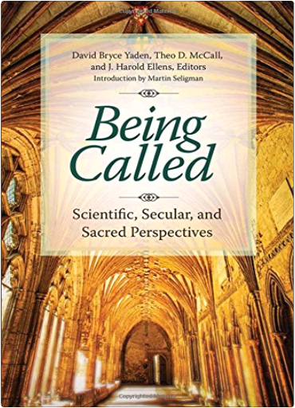
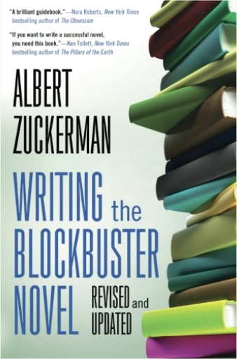

Being Called: Scientific, Secular, and Sacred PerspectivesDavid Bryce Yaden, Theo D. McCall, J. Harold Ellens This unique book is an essential resource for interdisciplinary research and scholarship on the phenomenon of feeling called to a life path or vocation at the interface of science and religion.
• Offers religious, spiritual, scientific, and secular avenues of understanding experiences of calling
• Creates an opening for a new dialogue between psychology and spirituality
• Provides readers with sound, practical advice on how to find one's own calling or ideal direction in life in the modern world
• Includes contributions by well-known scholars and scientists such as Dr. Martin Seligman, who discovered learned helplessness and founded positive psychology; Dr. Andrew Newberg, who pioneered the neuroscience of spiritual experiences; and Dr. Ralph Hood, a renowned expert on mystical experiences Writing the Blockbuster NovelAlbert Zuckerman Albert Zuckerman, legendary literary agent, has worked with many bestselling authors, including Ken Follett, Olivia Goldsmith, Antoinette Van Heugten, Michael Lewis, and F. Paul Wilson. Zuckerman is a master at teaching writers the skills necessary to crack the bestseller list.
For this revised edition of Writing the Blockbuster Novel, Zuckerman has added an analysis of Nora Roberts's The Witness, which he uses along with classic books like Gone With the Wind and The Godfather, to illustrate his points. Zuckerman's commentary on Ken Follett's working outlines for The Man From St. Petersburg provide a blueprint for building links between plot and character. A new introduction discusses social media and self-publishing.
Writing the Blockbuster Novel is an essential tool for any aspiring author. As Dan Brown said in an interview: "Not long ago, I had an amusing experience meeting the author of a book I received as a gift nearly two decades ago a book that in many ways changed my life. I was halfway through writing my first novel when I was given a copy of Writing the Blockbuster Novel. [Zuckerman's] book helped me complete my manuscript and get it published. [When] I met Mr. Zuckerman for the first time. I gratefully told him that he had helped me. He jokingly replied that he planned to tell everyone that he had helped me write The Da Vinci Code." |

 Made with Delicious Library
Made with Delicious Library